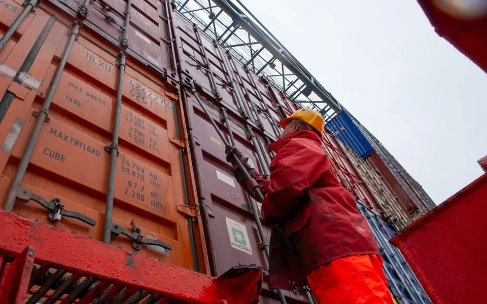

Comercio exterior
IA en aduanas y comercio internacional
Importadores y agentes de aduanas tramitan facturas, listas de bultos, clasificaciones arancelarias y comprobaciones de socios, todo ello bajo normas estrictas. La automatización puede hacer gran parte de la preparación. Una persona debe responder siempre de cada declaración.
3 min de lectura

Seguridad de la cadena de suministro
CTPAT, gestionado por la agencia de aduanas y protección de fronteras de Estados Unidos (CBP), es una asociación voluntaria en la que las empresas se comprometen con prácticas de seguridad de la cadena de suministro. Participar aporta ventajas, y también expectativas sobre cómo verificar a los socios y tramitar los documentos. En la UE, el estatuto de operador económico autorizado sigue una lógica parecida.
El cribado de sanciones
Antes de operar con una parte, las empresas la comparan con las listas de sanciones de la OFAC, del Tesoro de Estados Unidos, entre ellas la lista de Specially Designated Nationals. Los nombres son desordenados: transliteraciones, abreviaturas y nombres comunes producen posibles coincidencias. Una herramienta de IA puede encontrarlas y ordenarlas. Descartar o escalar una coincidencia es una decisión humana, y debe quedar registrada.
La exactitud le corresponde a usted
Valores, orígenes y clasificaciones de una declaración aduanera son manifestaciones del declarante. Una herramienta que rellena un formulario a partir de una factura acelera el trabajo. No traslada la responsabilidad.
Un flujo razonable
- La herramienta extrae los datos de facturas y listas de bultos y prepara la declaración.
- Se señalan las discrepancias entre documentos.
- Los resultados del cribado se muestran con el motivo de cada posible coincidencia.
- Una persona revisa, decide y aprueba la declaración.
En Flow
Flow prepara los documentos y los pasos en las herramientas del equipo, y no se presenta ni se envía nada antes de que una persona apruebe con Do It. Cada paso queda registrado.